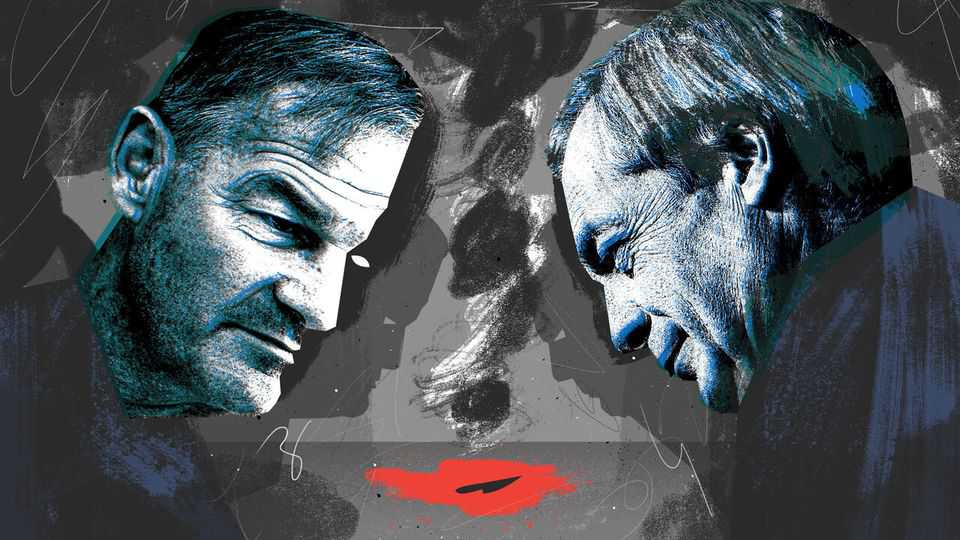

British politicians are racing to the hard right
Amid riots in Belfast, Restore promises to put “murderous third-world savages to death”
June 11th 2026

When a Sudanese refugee was caught attacking a man in Belfast on June 8th, Restore, a far-right party, pledged: “A Restore Britain government will put murderous third-world savages to death.” Tragedy brought clarity: the British right is moving right. Ideas that were until recently extreme, whether capital punishment or mass deportations, are now mainstream. Small parties, such as Rupert Lowe’s Restore, may attract low single-digit support in polls. Yet they are pulling Reform UK and the Conservatives further to the right with a simple remorseless logic: that there is no limit to how nasty the British public can be.
What was once taboo is now up for debate. After footage of the attack in Belfast emerged, Mr Lowe pledged to have the accused executed “with the British people’s approval”. Thanks to his party’s surprising breakthrough in Makerfield, which soon faces a by-election where Restore is expected to come third, way ahead of the Conservatives, these sweeping threats are now read out on BBC Radio 4 as just another political opinion. Others are more coy. The death penalty will “be back within the next decade as an issue of major national debate”, said Nigel Farage, Reform’s leader, last year, passively. It is something that will bubble up naturally. If so, runs Mr Farage’s logic, so be it.
Calls for execution were soon replaced by calls for mass deportations. “Deport them all,” said one anchor from GB News, a right-wing channel ostensibly regulated by Ofcom. “Nothing else will stop this.” A once-lonely demand by Mr Lowe that “millions must go” has become a key policy for Reform, which sits at the top of the national polls. It is a remarkable lurch right. In late 2024 Mr Farage still cowered from the idea of mass deportations. “I’m not going to get dragged down the route of mass deportations or anything like that,” he said. Skip forward a year and his tune had changed. Standing in front of a mock airport-departures board with the destinations of “Sudan”, “Afghanistan” and “Yemen”, Mr Farage launched an Illegal Migration (Mass Deportation) Bill.
If such action is not taken, they warn, violence will follow. The sight of young men in masks burning down houses in Belfast led to a strange cocktail of loud condemnation and quiet vindication on the British right. Parties trying to appeal to authoritarian voters appalled by the attack have started suggesting that a riot is a voice of the unheard. Mr Lowe offers advice for protesters to avoid arrest; Mr Farage, for now, sticks to euphemism, warning repeatedly of “civil disorder” unless his precise policy prescriptions are followed. It is an unfamiliar position for a man who has never had to shore up his right flank.
Even the centre-right has fallen prey to violent fantasy. Though Kemi Badenoch, leader of the Tories, condemned the riots in Belfast, she also argues that politicians relying on votes from “one particular community” is “how you end up with civil war”. The result is a strange spectacle whereby the Tory leader can decry violence, do a photo opportunity in Marks & Spencer, the symbol of Middle England, and predict civil war all in the same week.
What would the sides be in such a war? The scene from Belfast provided them: a black refugee straddling a white victim. What clearer proof could there be of the “anti-white prejudice” Mr Farage now rails against? Predictions of race war that would make Enoch Powell blush are churned out on X and Facebook and cheered on by everyone from Mr Farage to J.D. Vance, America’s vice-president. Now they have an image to go along with it.
Fundamentally, the British right has bet that the British public are, for want of a better word, bastards. Mr Lowe expanded on this philosophy in a podcast: “When you’re called a racist, or you’re called a bigot, or you’re called right-wing—which I don’t even think we are, I just think we’re the common-sense party—the three key words are: ‘I don’t care’.” But what if people do? There is a reason the first line of defence is always “I’m not racist, but”, rather than “I am racist, and”. It is an irony of British populism that those politicians who claim to speak for the people are often furthest from them.
Once the fever breaks, support for the death penalty wilts as people are grilled on who should actually be put to death. The idea of “mass deportations” is a bold one in a country where the mistaken deportation of a few dozen British citizens led to the fall of a home secretary and a years-long scandal that still shames the state. Punitive sentences for those who burned down houses in Belfast will be cheered by voters, who will care little for the rioters’ motivation. That politicians are willing to discuss the idea of civil war—never mind race war—reveals a political elite utterly disconnected from the daily frustrations of British voters.
The right’s base instincts fill the airwaves in part because there are few willing to fight them. Britain is cursed by a prime minister incapable of meeting this particular moment, as high-profile crimes blend with ridiculous fantasy. Never has a prime minister proved less willing to use their pulpit. While his opponents preach anarchy, Sir Keir Starmer is mute, surrendering to the right’s idea that the public are irredeemable. Fatalism has infected Labour when it comes to dealing with Reform, which, though first in the polls, is only roughly as popular as Rishi Sunak’s Conservatives, who enjoyed their worst-ever result in the 2024 general election.
It is after a heinous crime that the right’s low expectations of hard bigotry become clear. The British right is offering a world in which criminals are put to death; where “millions must go”; where pogroms are the inevitable result of a country in which white people are now second-class citizens. It is increasingly clear what the likes of Mr Farage and Mr Lowe are selling. The hope is that British voters will not buy it. ■
Subscribers to The Economist can sign up to our Opinion newsletter, which brings together the best of our leaders, columns, guest essays and reader correspondence.